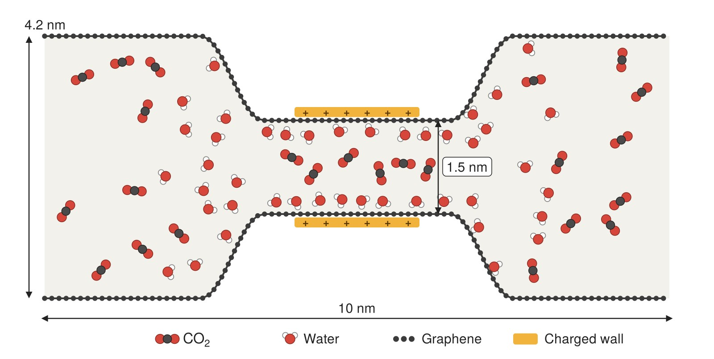

Background
Carbon materials with pores only a few molecules wide are promising for separating and storing CO₂. In real conditions these pores are rarely dry: water is almost always present, and pore walls are often charged. Both change how CO₂ gets in and how it gets through, but how they work together is not well understood.
Our approach
We run molecular dynamics simulations of CO₂ and water in a slit pore made of two graphene sheets with a narrow throat in the middle. We vary the amount of water and the charge on the throat walls, and follow every CO₂ molecule as it enters the throat and either crosses to the other side or returns. This lets us split the crossing rate into two simple parts: how often CO₂ enters the throat, and how likely it is to get through once inside.
- How does wall charge rearrange water and CO₂ inside the pore?
- How does the amount of water change the effect of charge on CO₂ transport?
- Under which conditions (charge, pore size, amount of water) can water block the pore completely?
Applications
The results help explain how CO₂ behaves in wet, charged nanopores, which is relevant for capturing CO₂ with porous carbon materials and for storing it in porous rock. They also point to which material properties, such as surface charge and pore size, can be tuned to control CO₂ transport.